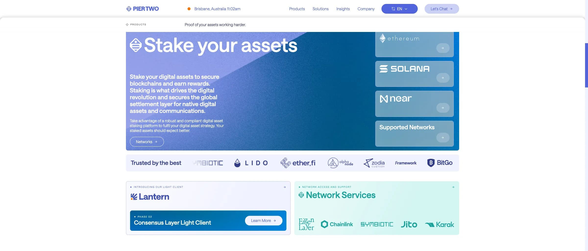

Staking — Infrastructure — Enterprise
Pier Two
A full institutional staking platform letting professional clients monitor, manage and operate validator positions end to end across networks.
Read case studyMost blockchain projects don’t fail because the tech breaks. They fail because someone built the wrong thing, overcomplicated the architecture, or never properly tested whether blockchain was the right tool in the first place.
Engagement
Strategic & Advisory
Typical Duration
2 – 6 weeks
Focus & Stack
We work with founders, CTOs, enterprises, and government teams to figure out where blockchain actually improves an outcome and where it just adds complexity. Our consultants are practising engineers who have built and deployed the systems they advise on. The output is a clear recommendation you can act on, not a slide deck full of possibilities. If a database does the job better, we’ll say so.
Is blockchain the right tool? We evaluate against trust requirements, data sharing needs, and settlement logic. Plenty of problems are better solved without it. If a database does the job better, we’ll say so.
For teams already building. Chain selection, contract design, wallet strategy, data layer, infrastructure. We flag risks, inefficiencies, and things that won’t scale.
Token classification, custody obligations, disclosure requirements across Australian and international markets. Not legal advice, but the technical and commercial framing that helps you engage counsel properly.
Supply dynamics, distribution mechanics, incentive structures, scenario analysis. Grounded in what actually works, not theoretical tokenomics.
Stakeholder interviews, technical landscape review, problem definition. We establish what success looks like and what constraints exist.
Stakeholder interviews, technical landscape review, problem definition. We establish what success looks like and what constraints exist.
Deep assessment against the agreed scope. Architecture reviews, token modelling, competitive analysis, technical due diligence.
Deep assessment against the agreed scope. Architecture reviews, token modelling, competitive analysis, technical due diligence.
Written report with clear recommendations, architecture brief, phased plan if the recommendation is to proceed. Presented to stakeholders.
Written report with clear recommendations, architecture brief, phased plan if the recommendation is to proceed. Presented to stakeholders.
Deliverables
FAQ
That’s a valid starting point. We help teams make that decision with evidence, not assumptions. If you’re weighing up whether blockchain belongs in your product, we should talk.